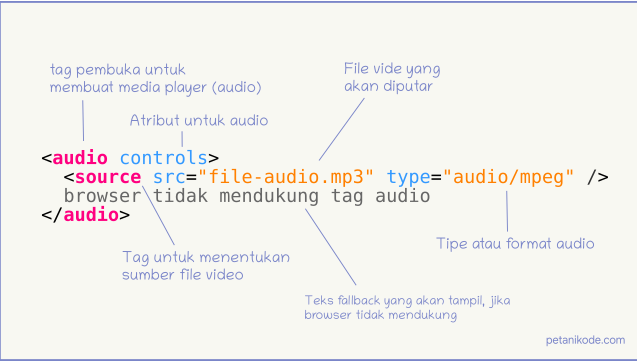

Audio juga bisa ditambakan kedalam isi dari HTML, kita pelajari caranya bagaimana!!
Sebelum adanya HTML 5, audio di HTML ditambahkan dengan program eksternal seperti flash player. Namun, kini HTML sudah punya tag sendiri yakni audio. Tag audio adalah tag untuk membuat audio player. langsung saja ke codingannya dan hasilnya.
Ada beberapa atribut didalam tag audio, yaitu :
Atribut ini berfungsi untuk mengaktifkan tombol kontrol seperti tombol play, pause, stop, scroll, dan volume).
Atribut ini berfungsi untuk memutar audio secara otomatis. Nilai yang bisa diberikan pada atribut ini adalah true dan false. Nilai true artinya kita akan memutar audio secara otomatis, dan false artinya audio tidak akan diputar secara otomatis.
Atribut loop berfungsi untuk mengulang-ulang pemutaran audio. Ini seperti repeat one. Nilai yang bisa diberikan adalah true dan false.
muted Atribut ini berfungsi untuk mensenyapkan audio. Nilai yang bisa diberikan adalah true dan false.
Catatan: Jika pada codingannya tidak dituliskan 'false' maka berarti nilai nya adalah 'true'.
Silahkan Pilih Jenis Musik Kesukaan Kalian